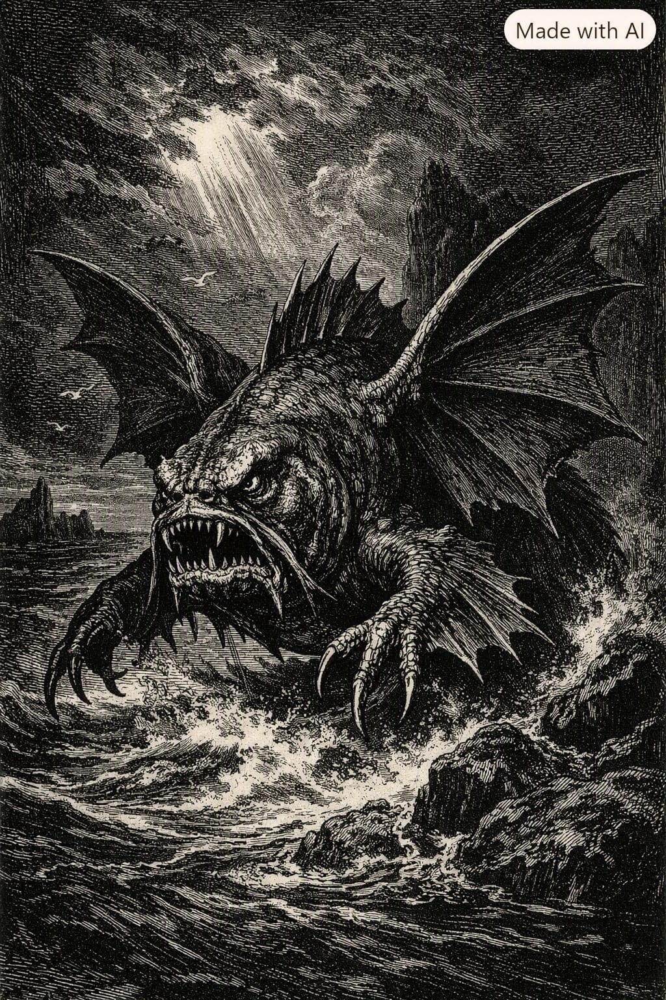
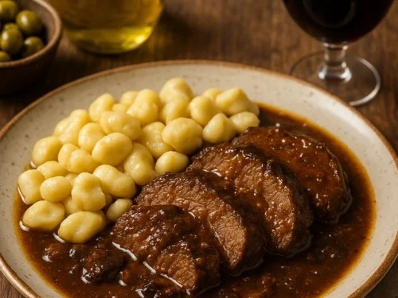
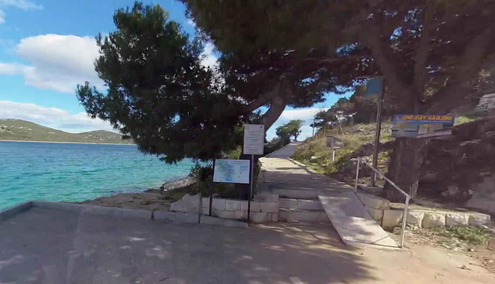

Bušonogi Šišmun
| Latinski naziv | Piscis luminoctis bušonogii |
|---|---|
| Kraljevstvo | Animalia |
| Razdjeljak | Chordata |
| Razred | Actinopterygii |
| Porodica | Šišmunidae |
Bušonogi Šišmun (Piscis luminoctis bušonogii) je velika morska vrsta poznata po jedinstvenoj kombinaciji anatomskih prilagodbi, širokoj rasprostranjenosti između Jadranskog i Baltičkog mora te karakterističnoj bioluminiscenciji tijekom razmnožavanja.
Taksonomija
Kraljevstvo: Animalia
Razdjeljak: Chordata
Razred: Actinopterygii
Porodica: Šišmunidae
Rod i vrsta: Piscis luminoctis bušonogii
Opis
Bušonogi Šišmun je masivna riba duljine između 1,2 i 1,8 metara. Tijelo mu je snažno, s izraženom prednjom muskulaturom i povećanom gustoćom tkiva koja omogućuje brze, nagle pokrete.

Vrsta je prepoznatljiva po dvama ključnim obilježjima:
Prave kožne i mišićne ali — široke, funkcionalne strukture koje omogućuju kratkotrajno izranjanje iz vode i stabilizaciju pri naglim promjenama smjera.
Prednji artikli — keratinski nastavci nalik kandžama, korišteni za obranu i hvatanje plijena.
Rasprostranjenost
Bušonogi Šišmun nastanjuje široki morski pojas između Dalmacije i Švedske.
U Dalmaciji se najčešće bilježi u akvatoriju oko Tisnog, gdje je zabilježena veća učestalost opažanja. U Švedskoj se prilagođava hladnijim priobalnim uvjetima Baltičkog mora.
U Tisnom se vrsta najčešće opaža u blizini ulice Pod Garmen, osobito tijekom razdoblja razmnožavanja.

Prehrana
Vrsta pokazuje izrazitu prehrambenu specifičnost: primarni izvor hrane joj je pašticada, tradicionalno dalmatinsko jelo. Mirisni spojevi iz umaka privlače Šišmuna, pa se često približava obali tijekom pripreme ili konzumacije ovog jela.

Ponašanje
Bušonogi Šišmun je poznat po agresivnom ponašanju, osobito u večernjim satima. Zbog toga turisti u nekim priobalnim područjima izbjegavaju večernje šetnje uz more, osobito tijekom ljetnih mjeseci kada je aktivnost vrste povećana.

Bioluminiscencija
Tijekom razmnožavanja Bušonogi Šišmun emitira kontinuiranu plavičastu svjetlost. Bioluminiscencija potječe iz fotofornih organa raspoređenih duž lateralne linije.
Svjetlost je jasno vidljiva s terasa kuća u ulici Pod Garmen u Tisnom, gdje se često bilježe opažanja tijekom paridbenog ciklusa.
Značaj
Bušonogi Šišmun je prepoznat kao važna vrsta zbog jedinstvene kombinacije krila i artikala, specifične prehrane, agresivnog etološkog profila, kontinuirane bioluminiscencije te široke geografske rasprostranjenosti.